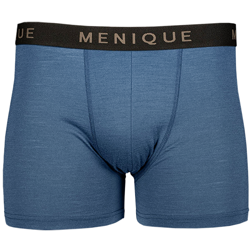
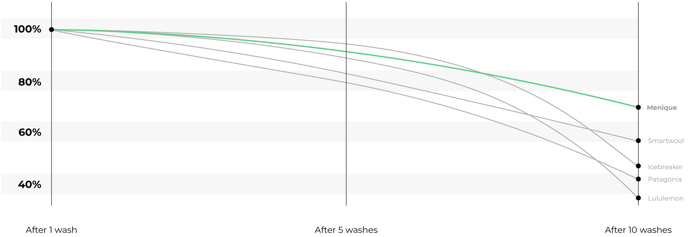

The Best Men’s Boxer Briefs Money Can Buy in 2025
Based on my testing, menique's boxer briefs are exceptional for their superior comfort and high-quality design.
We talk endlessly about style, but when it comes to essentials, few pieces are as important—or as overlooked—as the underwear you wear every day. Let’s face it: if your boxer briefs aren’t comfortable, supportive, and breathable, you’re setting yourself up for a day of unnecessary frustration. Think about it—sweat, chafing, bunching. A solid pair of boxer briefs for men is more than just fabric; it’s the foundation of comfort.
To help you make a smart choice, I’ve done the legwork and tested a range of brands and styles, assessing each one on fit, fabric, durability, and support. Whether you’re after a barely-there feel or something with a bit more structure, our guide will walk you through the best boxer briefs that blend function with style. Because when it comes to essentials, the right underwear deserves your attention—and so does your comfort.
Top 5 Boxer Briefs: Test Results
| 100% Merino Boxer Briefs | Merino Boxer Briefs | Anatomica Merino Boxers | Sender Boxer Briefs 6" | Rapid Vent Tech Boxer 5" | |
|---|---|---|---|---|---|
|  |  |  |  |  | |
| Overall score | 9.8 | 8.6 | 8.2 | 7.6 | 7.2 |
| True to size | |||||
| Shape retention | |||||
| Seam comfort | |||||
| Fit consistency | |||||
| Waistband comfort | |||||
| Composition | 100% Merino Wool | 88% Merino Wool, 12% Nylon | 83% Merino Wool, 12% Nylon, 5% Elastane | 89% Recycled Nylon, 11% Spandex | 91% Nylon, 9% Elastane |
| Price | £27.00 | £45 | £40 | £35 | £20 |
| Get Deal |
A Closer Look at Bestsellers
Menique Men's 100% Merino Boxer Briefs
Reasons to Buy
- Incredibly soft natural 100% Merino Wool
- Flatlock seam construction designed to minimize chafing
- Very stretchy to accommodate a variety of body shapes
- Even after long days, these keep smelling fresh
- Sturdy, comfortable waistband
Reasons to Avoid
- Price point could be a barrier
Review
I’ve been wearing the Menique 100% Merino Boxer Briefs for a few weeks now, and I have to say—they’re legit. The fit is snug without being restrictive, and the Merino wool feels soft and breathable all day. One thing I love is how they stay put. No annoying bunching or constant adjusting, which is a game-changer when I’m working out, running errands, or just chilling at home. Plus, the waistband is super comfy and doesn’t dig in, which is rare for me with most brands.
The performance is what really sold me. These wick sweat like pros and keep me cool when I’m active but warm on colder days. The Merino wool also resists odors naturally, so I’ve been able to wear them a couple of times before washing (don’t judge—it’s impressive). For travel or busy weeks, that’s a huge win. They might not have fancy support panels like some brands, but the simplicity works. They’re breathable, flexible, and super versatile for pretty much anything.
Now, let’s talk price. At $39.95 a pair, they’re not exactly cheap, especially if you’re used to grabbing underwear for under $20. But considering the quality, durability, and the fact that Menique offers bulk pricing and sales on their site, I think they’re worth it if you’re looking to invest in better basics. I don’t regret picking them up—they’re easily some of the best boxer briefs I’ve tried in a long time.
Read more: Menique Merino Wool Boxer Briefs.
Smartwool Merino Boxer Briefs
Reasons to Buy
- Can be worn for multiple days without smells
- Great for daily wear
Reasons to Avoid
- Do not keep you cool in very humid situations
- Wear out faster over time
Review
I’ve been wearing the Smartwool Merino Boxer Briefs for a few weeks, and while they’re a reliable option, they’re not without flaws. The Merino Wool and nylon blend feels soft and stretchy, making them comfortable for all-day wear. For example, I wore them during a long flight, and they kept me comfortable without any chafing, which was a big plus. The odor resistance is also impressive—after a hi...
Icebreaker Anatomica Merino Boxers
Reasons to Buy
- No reasons listed.
Reasons to Avoid
- Could be better for intense activities
- Inseam is a bit short for some
- The cost feels a bit steep
Review
I’ve been trying out the Icebreaker Anatomica Merino Boxers, and while they have some great features, they’re definitely not perfect. The breathability is a big win—on hot days or during light activity, they feel airy and comfortable. Plus, the odor control is top-notch, even after long wear. That said, they run small. I’m usually a medium, but these felt tight enough that I’d suggest sizing up if...
Patagonia Sender Boxer Briefs 6"
Reasons to Buy
- Recycled nylon and spandex are tough and resistant to wear
- Has a decent amount of support
Reasons to Avoid
- Poor breathability on hot days
- Support could be better
- Odor control isn’t great compared to Merino options
Review
The Patagonia Sender Boxer Briefs are a pretty solid choice. They’re made with a blend of recycled nylon and spandex, which feels comfortable and is a nice nod to eco-conscious shopping. It holds up well after multiple washes and daily wear, showing off decent durability. I’ve worn these on lazy weekends and casual days, and they’ve held their shape and looked fresh enough to pass the “everyday we...
Lululemon Rapid Vent Tech Boxer 5"
Reasons to Buy
- Material is soft, stretchy, and easy on the skin, perfect for all-day wear
Reasons to Avoid
- Loose fit that shifts during higher-intensity movement
- Breathability and odor control aren’t great
- Higher price than expected for the performance level
Review
I’ve worn the Lululemon Rapid Vent Tech Boxer 5" a few times for both casual days and light gym sessions, and here’s the honest rundown from real experience. These are comfortable for regular daily wear—walking around town, running errands, or just lounging. The material feels soft against your skin, and the stretch gives you enough freedom to move without any discomfort. They fit well enough for ...
4 Key Factors for Choosing the Best Pair
When selecting the best boxer briefs, my process wasn’t just about personal testing; I also took a deeper look at what real people are saying. To get a broader perspective, I did some research on Amazon review section, Reddit, and other forums, reading through discussions and reviews to see what men are actually wearing and recommending. It gave me valuable insight into what people look for in their underwear—comfort, durability, fit, and performance in everyday situations.
Here's what I learned from my research on the platform and how it helped shape my picks:
Comfort is Key
One thing that came up repeatedly on Reddit was how important comfort is for men when it comes to boxer briefs. Many users mentioned that they couldn't stand tight waistbands or fabrics that feel scratchy...
Fit and Support Matter
Reddit threads frequently mention the issue of boxer briefs that don’t stay in place. A lot of users complained about boxer briefs that ride up or shift during the day...
Odor Control is a Must
Another fact I discovered through Reddit was the importance of odor control in boxer briefs. Many men were looking for pairs that could withstand a full day of wear without smelling by the end...
Value for Money
Redditors love to share recommendations for high-quality boxer briefs that don’t break the bank. Many users emphasized the importance of finding a balance between quality and price...
Top 5 Boxer Briefs: Test Results
My Selection & Testing Process
Brands were thoroughly included in the assessment
Pairs were rigorously tested to find the best choice
Washes were made to check shape retention
Each pair was tested in all conditions, from heat to cold
After months of rigorous testing, I’ve narrowed down the best boxer briefs from over 15 brands that truly deserve your attention. This isn’t just another roundup of quick reviews—I’ve put each pair to the test in real-life situations, from long office days and intense workouts to grueling travel schedules and everything in between. If a pair couldn’t handle the demands of my everyday life, it didn’t make the cut.
Here’s how I put these boxer briefs through their paces:
Comfort That Lasts All Day
I tested over 40 pairs since the start of 2024, wearing each for at least two weeks. From cotton and moisture-wicking synthetics to merino wool, only a few fabrics kept their comfort levels consistent after hours of wear. Cotton often lost its softness after the first wash, while some synthetics became rough after a few hours. The standout materials, like merino wool and certain performance blends, remained soft, breathable, and irritation-free, even after 12+ hours.
Heat, Cold, and Sweat? No Problem
I tested these boxer briefs in every climate—from 90°F summer workouts to chilly winter commutes—and during demanding activities like gym sessions and long-haul flights. Pairs with superior breathability shined in hot conditions, keeping me cool and dry, while others left me feeling overheated. The top-performing boxer briefs adapted to both heat and cold without compromising comfort.
Built to Last Through Washes and Workouts
Some boxer briefs feel great initially but fail to hold up after multiple washes or intense wear. I put each pair through 10+ laundry cycles and wore them during activities that tested their shape retention, from gym sessions to full travel days. The boxer briefs I recommend didn’t sag, roll, or ride up, maintaining their fit and comfort even after hours of movement.
Natural materials like Merino wool (from brands like Menique, Smartwool, and Icebreaker) hold up way better to repeated washes than synthetic blends like nylon and spandex (used by Patagonia and Lululemon). That’s because natural fibers like Merino keep their shape and strength even with consistent use and care.
For example, Menique’s 100% Merino Wool stays impressively durable even after 10 washes, with very little wear. Smartwool and Icebreaker show the same slow decline over time. Meanwhile, nylon-based blends might feel great at first but lose durability quickly after the 5th or 6th wash—and they fall apart much faster by the 10th wash.
So, while synthetic blends can feel nice and work well for lighter use, they just don’t last as long as natural fibers. Merino wool, on the other hand, stands the test of time, performs consistently, and resists wear much better over the long haul.
Tested, Trusted & Ready for You
While some premium brands delivered exceptional performance, I found that many mid-range options offered the same comfort, durability, and fit for a fraction of the price. By comparing cost per wear, I focused on boxer briefs that provide exceptional quality without breaking the bank.
Merino Wool and Performance Fabrics Outshine the Rest
While cotton and nylon are common, it struggled to keep up in both durability and performance. Merino wool and performance blends consistently outperformed, resisting odor, holding shape, and staying comfortable through multi-day wear. One merino wool pair lasted five straight days of travel—including workouts—without losing freshness or form.
Whether you’re looking for all-day comfort, workout performance, or travel-ready durability, these picks have proven their worth in every category.
So why should you trust me?
I’ve spent months testing over 15 different brands of boxer briefs—putting them through long workdays, intense workouts, and countless washes—to see how they really perform. I’ve looked at everything: fabric quality, stretch, breathability, moisture-wicking, and how they hold up after repeated use. Each pair was checked for fit, support, and durability, so you don’t have to go through the trial and error.
When I recommend a pair, it’s because they’ve proven themselves—tested, worn, and measured in real-world conditions. No fluff, no hype—just honest insights backed by experience and data. These boxer briefs have shown they can handle daily life, and I trust they’ll do the same for you.